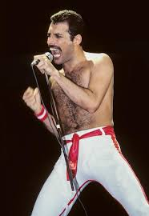
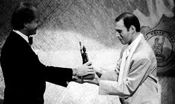

FREDDIE MERCURY

Freddie Mercury (born Farrokh Bulsara; 5 September 1946 – 24 November 1991) was a British singer, songwriter, record producer, and lead vocalist of the rock band Queen. Regarded as one of the greatest singers in the history of rock music, he was known for his flamboyant stage persona and four-octave vocal range.
Born: 5 September 1946, Stone Town, Tanzania
Died: 24 November 1991, Kensington
Full name: Farrokh Bulsara
Parents: Bomi Bulsara, Jer Bulsara
ALBUMS:
Let's Turn It On (Mercury) – 3:42,
Made in Heaven (Mercury) – 4:05,
I Was Born to Love You (Mercury) – 3:38,
Foolin' Around (Mercury) – 3:29,
Your Kind of Lover (Mercury) – 3:32,
Mr. Bad Guy (Mercury) – 4:09,
Man Made Paradise (Mercury) – 4:08,
There Must Be More to Life Than This (Mercury) – 3:00,
Living on My Own (Mercury) – 3:23,
My Love Is Dangerous (Mercury) – 3:42,
Love Me Like There's No Tomorrow (Mercury) – 3:46

AWARDS:
Melody Maker: 'Band of the Year
Record Mirror: 2nd Best British Newcomer, 2nd Best Single ("Killer Queen"), 9th International Group
NME: 8th Best British Group, 7th Best Stage Band, 4th Most Promising Group In The World, 3rd Most Promising New Name, 17th Best World
Disc: Top Live Band, Top International Group, Top British Group, Top Single ("Killer Queen"), 3rd Best Album (Sheer Heart Attack), 5th Best Album (Queen II)
Ivor Novello Award to Mercury for "Killer Queen"
Golden Lion Award (Belgium) to Mercury for "Killer Queen"
Carl Allen Award for contribution to the Ballroom Dancing In.